| Ascending_Rank | District | Median Income | Representative | Party | |
|---|---|---|---|---|---|
| 422 | 422 | MD-3 | 114804 | J. Sarbanes | Democrat |
| 423 | 423 | MA-5 | 115618 | K. Clark | Democrat |
| 424 | 424 | NY-12 | 116070 | J. Nadler | Democrat |
| 425 | 425 | VA-8 | 116332 | D. Beyer | Democrat |
| 426 | 426 | MD-5 | 117049 | S. Hoyer | Democrat |
| 427 | 427 | NJ-11 | 117198 | M. Sherrill | Democrat |
| 428 | 428 | NY-3 | 119185 | G. Santos | Republican |
| 429 | 429 | CA-14 | 119209 | E. Swalwell | Democrat |
| 430 | 430 | NJ-7 | 119567 | T. Kean | Republican |
| 431 | 431 | NY-1 | 120031 | N. LaLota | Republican |
| 432 | 432 | WA-1 | 120671 | S. DelBene | Democrat |
| 433 | 433 | MD-8 | 120948 | J. Raskin | Democrat |
| 434 | 434 | NY-4 | 121979 | A. D’Esposito | Republican |
| 435 | 435 | CA-11 | 124456 | N. Pelosi | Democrat |
| 436 | 436 | CA-15 | 125855 | K. Mullin | Democrat |
| 437 | 437 | CA-10 | 135150 | M. DeSaulnier | Democrat |
| 438 | 438 | VA-11 | 139003 | G. Connolly | Democrat |
| 439 | 439 | VA-10 | 140815 | J. Wexton | Democrat |
| 440 | 440 | CA-16 | 150720 | A. Eshoo | Democrat |
| 441 | 441 | CA-17 | 157049 | R. Khanna | Democrat |
16 Ranks, Quantiles and Standard Scores
Imagine we have a set of measures, in some particular units. We may want some way to see quickly how these measures compare to one another, and how they may compare to other measures, in different units.
Ranks are one way of having an implicit comparison between values.1 Is the value large in terms of the other values (with high rank) — or is it small (low rank)?
We can convert ranks to quantile positions. Quantile positions are values from 0 through 1 that are closer to 1 for high rank values, and closer to 0 for low rank values. Each value in the data has a rank, and a corresponding quantile position. We can also look at the value corresponding to each quantile position, and these are the quantiles. You will see what we mean later in the chapter.
Ranks and quantile positions give an idea whether the measure is high or low compared to the other values, but they do not immediately tell us whether the measure is exceptional or unusual. To do that, we may want to ask whether the measure falls outside the typical range of values — that is, how the measure compares to the distribution of values. One common way of doing this is to re-express the measures (values) as standard scores, where the standard score for a particular value tells you how far the value is from the center of the distribution, in terms of the typical spread of the distribution. (We will say more about what we mean by “typical” later.) Standard values are particularly useful to allow us to compare different types of measures on a standard scale. They translate the units of measurement into standard and comparable units.
16.1 Household income and congressional districts
Democratic congresswoman Marcy Kaptur has represented the 9th district of Ohio since 1983. Ohio’s 9th district is relatively working class, and the Democratic party has, traditionally, represented people with lower income. However, Kaptur has pointed out that this pattern appears to be changing; more of the high-income congressional districts now lean Democrat, and the Republican party is now more likely to represent lower-income districts. The French economist Thomas Piketty has described this phenomenon across several Western countries. Voters for left parties are now more likely to be highly educated and wealthy. He terms this shift “Brahmin Left Vs Merchant Right” (Piketty 2018). The data below come from a table Kaptur prepared that shows this pattern in the 2023 US congress. The table lists the top 20 districts by the median income of the households in that district, along with their representatives and their party.2
You may notice right away that many of the 20 richest districts have Democratic Party representatives.
In fact, if we look at all 441 congressional districts in Kaptur’s table, we find a large difference in the average median household income for Democrat and Republican districts; the Democrat districts are, on average, about 14% richer (Table 16.2).
| Mean of median household income | |
|---|---|
| Democrat | $76,933 |
| Republican | $67,474 |
Next we are going to tip our hand, and show how we got these data. In previous chapters, we had chunks like this in which we enter the values we will analyze. These values come from the example we introduced in Section 12.16:
# Liquor prices for US states with private market.
priv <- c(4.82, 5.29, 4.89, 4.95, 4.55, 4.90, 5.25, 5.30, 4.29, 4.85, 4.54,
4.75, 4.85, 4.85, 4.50, 4.75, 4.79, 4.85, 4.79, 4.95, 4.95, 4.75,
5.20, 5.10, 4.80, 4.29)Now we have 441 values to enter, and it is time to introduce Rs standard tools for loading data.
16.1.1 Comma-separated-values (CSV) format
The data we will load is in a file on disk called data/congress_2023.csv. These are data from Kaptur’s table in a comma-separated-values (CSV) format file. We refer to this file with its filename, containing the directory (data/) followed by the name of the file (congress_2023.csv), giving a filename of data/congress_2023.csv.
The CSV format is a very simple text format for storing table data. Usually, the first line of the CSV file contains the column names of the table, and the rest of the lines contain the row values. As the name suggests, commas (,) separate the column names in the first line, and the row values in the following lines. If you opened the data/congress_2023.csv file in some editor, such as Notepad on Windows or TextEdit on Mac, you would find that the first few lines looked like this:
Ascending_Rank,District,Median_Income,Representative,Party
1,PR-At Large,22237,J. González-Colón,Republican
2,AS-At Large,28352,A. Coleman,Republican
3,MP-At Large,31362,G. Sablan,Democrat
4,KY-5,37910,H. Rogers,Republican
5,MS-2,37933,B. G. Thompson,DemocratWe are particularly interested in the column named Median_Income.
You may remember the idea of indexing, introduced in Section 6.6. Indexing occurs when we fetch data from within a container, such as a string or an array. We do this by putting square brackets [] after the value we want to index into, and put something inside the brackets to say what we want.
For example, to get the first element of the priv array above, we use indexing:
As you can index into strings and Numpy arrays, by using square brackets, so you can index into Pandas data frames. Instead of putting the position between the square brackets, we can put the column name. This fetches the data from that column, returning a new type of value called a Pandas Series.
We want to go straight to our familiar Numpy arrays, so we convert the column of data into a Numpy array, using the np.array function you have already seen:
:::
16.1.2 Introducing R data frames
R is a data analysis language, so, as you would expect, it is particularly good at loading data files, and presenting them to us as a useful table-like structure, called a data frame.
We start by using R to load our data file. R has a special function to do this, called read.csv.
district_income <- read.csv('data/congress_2023.csv')We have thus far done many operations that returned R vectors. read.csv returns a new type of value, called a data frame:
class(district_income)[1] "data.frame"A data frame is R’s own way of representing a table, with columns and rows. You can think of it as R’s version of a spreadsheet. Data frames are a fundamental type in R, and there are many functions that operate on them. Among them is the function head which selects (by default) the first six rows of whatever you send it. Here we select the first six rows of the data frame.
# Show the first six rows in the data frame
head(district_income) Ascending_Rank District Median_Income Representative Party
1 1 PR-At Large 22237 J. González-Colón Republican
2 2 AS-At Large 28352 A. Coleman Republican
3 3 MP-At Large 31362 G. Sablan Democrat
4 4 KY-5 37910 H. Rogers Republican
5 5 MS-2 37933 B. G. Thompson Democrat
6 6 NY-15 40319 R. Torres DemocratThe data are in income order, sorted lowest to highest, so the first five districts are those with the lowest household income.
We are particularly interested in the column named Median_Income.
You can fetch columns of data from a data frame by using R’s $ syntax. The $ syntax means “fetch the thing named on the right of the $ attached to the value given to the left of the $”.
So, to get the data for the Median_Income column, we can write:
# Use $ syntax to get a column of data from a data frame.
# "fetch the Median_Income thing from district_income".
incomes = district_income$Median_Income
# The thing that comes back is our familiar R vector.
# Show the first five values, by indexing with a slice.
incomes[1:5][1] 22237 28352 31362 37910 3793316.1.3 Incomes and Ranks
We now have the incomes values as a vector.
There are 441 values in the whole vector, one of each congressional district:
length(incomes)[1] 441While we are at it, let us also get the values from the “Ascending_Rank” column, with the same procedure. These are ranks from low to high, meaning 1 is the lowest median income, and 441 is the highest median income.
lo_to_hi_ranks <- district_income$Ascending_Rank
# Show the first five values, by indexing with a slice.
lo_to_hi_ranks[1:5][1] 1 2 3 4 5In our case, the data frame has the Ascending_Rank column with the ranks we need, but if we need the ranks and we don’t have them, we can calculate them using the rank function.
16.1.4 Calculating ranks
As you might expect rank accepts a vector as an input argument. Let’s say that there are n <- length(data) values in the vector that we pass to rank. The function returns a vector, length \(n\), where the elements are the ranks of each corresponding element in the input data vector. A rank value of 1 corresponds the lowest value in data (closest to negative infinity), and a rank of \(n\) corresponds to the highest value (closest to positive infinity).
Here’s an example data vector to show how rank works.
# The data.
data <- c(3, -1, 5, -2)
# Corresponding ranks for the data.
rank(data)[1] 3 2 4 1We can use rank to recalculate the ranks for the congressional median household income values.
# Recalculate the ranks.
recalculated_ranks <- rank(incomes)
# Show the first 5 ranks.
recalculated_ranks[1:5][1] 1 2 3 4 516.2 Comparing two values in the district income data
Let us say that we have taken an interest in two particular members of Congress: the Speaker of the House of Representatives, Republican Kevin McCarthy, and the progressive activist and Democrat Alexandria Ocasio-Cortez. We will refer to both using their initials: KM for Kevin Owen McCarthy and AOC for Alexandra Ocasio-Cortez.
By scrolling through the CSV file, or (in our case) using some simple R code that we won’t cover now, we find the rows corresponding to McCarthy (KM) and Ocasio-Cortez (AOC) — Table 16.3.
| Ascending_Rank | District | Median Income | Representative | Party |
|---|---|---|---|---|
| 81 | NY-14 | 56129 | A. Ocasio-Cortez | Democrat |
| 295 | CA-20 | 77205 | K. McCarthy | Republican |
The rows show the rank of each congressional district in terms of median household income. The districts are ordered by this rank, so we can get their respective indices (positions) in the incomes vector from their rank.
# Rank of McCarthy's district in terms of median household income.
km_rank = 295
# Index (position) of McCarthy's value in the "incomes" vector.
# This is the same as the rank.
km_index = km_rankNow we have the index (position) of KM’s value, we can find the household income for his district from the incomes vector:
# Show the median household income from McCarthy's district
# by indexing into the "incomes" vector:
km_income <- incomes[km_index]
km_income[1] 77205Here is the corresponding index and incomes value for AOC:
# Index (position) of AOC's value in the "incomes" array.
aoc_rank = 81
aoc_index = aoc_rank
# Show the median household income from AOC's district
# by indexing into the "incomes" array:
aoc_income <- incomes[aoc_index]
aoc_income[1] 56129Notice that we fetch the same value for median household income from incomes as you see in the corresponding rows.
16.3 Comparing values with ranks and quantile positions
We have KM’s and AOC’s district median household income values, but our next question might be — how unusual are these values?
Of course, it depends what we mean by unusual. We might mean, are they greater or smaller than most of the other values?
One way of answering that question is simply looking at the rank of the values. If the rank is lower than \(\frac{441}{2} = 220.5\) then this is a district with lower median income than most districts. If it is greater than \(220.5\) then it has higher median income than most districts. We see that KM’s district, with rank 295 is wealthier than most, whereas AOC’s district (rank 81) is poorer than most.
But we can’t interpret the ranks without remembering that there are 441 values, so — for example - a rank of 81 represents a relatively low value, whereas one of 295 is relatively high.
We would like some scale that tells us immediately whether this is a relatively low or a relatively high value, without having to remembering how many values there are.
This is a good use for quantile positions (QPs). The QP of a value tells you where the value ranks relative to the other values, on a scale from \(0\) through \(1\). A QP of \(0\) tells you this is the lowest-ranking value, and a QP of \(1\) tells you this is the highest-ranking value.
We can calculate the QP for each rank. Think of the low-to-high ranks as being a line starting at 1 (the lowest rank — for the lowest median income) and going up to 441 (the highest rank — for the highest median income).
The QP corresponding to any particular rank tells you how far along this line the rank is. Notice that the length of the line is the distance from the first to the last value, so 441 - 1 = 440.
So, if the rank was \(1\), then the value is at the start of the line. It has got \(\frac{0}{440}\) of the way along the line, and the QP is \(0\). If the rank is \(441\), the value is at the end of the line, it has got \(\frac{440}{440}\) of the way along the line and the QP is \(1\).
Now consider the rank of \(100\). It has got \(\frac{(100 - 1)}{440}\) of the way along the line, and the QP position is 0.22.
More generally, we can translate the high-to-low ranks to QPs with:
# Length of the line defining quantile positions.
# Start of line is rank 1 (quantile position 0).
# End of line is rank 441 (quantile position 1).
distance <- length(lo_to_hi_ranks) - 1 # 440 in our case.
quantile_positions <- (lo_to_hi_ranks - 1) / distance
# Show the first five.
quantile_positions[1:5][1] 0.00000 0.00227 0.00455 0.00682 0.00909Let’s plot the ranks and the QPs together on the x-axis:
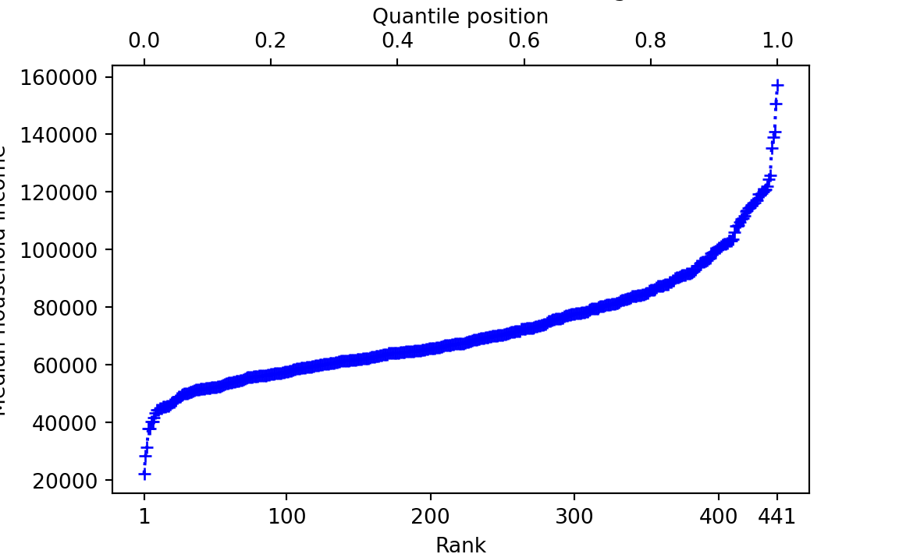
The QPs for KM and AOC tell us where their districts’ incomes are in the ranks, on a 0 to 1 scale:
km_quantile_position <- quantile_positions[km_index]
km_quantile_position[1] 0.668aoc_quantile_position <- quantile_positions[aoc_index]
aoc_quantile_position[1] 0.182If we multiply the QP by 100, we get the percentile positions — so the percentile position ranges from 0 through 100.
# Percentile positions are just quantile positions * 100
message('KM percentile position: ', km_quantile_position * 100)KM percentile position: 66.8181818181818message('AOC percentile position: ', aoc_quantile_position * 100)AOC percentile position: 18.1818181818182Now consider one particular QP: \(0.5\). The \(0.5\) QP is exactly half-way along the line from rank \(1\) to rank \(441\). In our case this corresponds to rank \(\frac{441 - 1}{2} + 1 = 221\).
message('Middle rank: ', lo_to_hi_ranks[221])Middle rank: 221message('Quantile position: ', quantile_positions[221])Quantile position: 0.5The value corresponding to any particular QP is the quantile value, or just the quantile for short. For a QP of 0.5, the quantile (quantile value) is:
# Quantile value for 0.5
message('Quantile value for QP of 0.5: ', incomes[221])Quantile value for QP of 0.5: 67407In fact we can ask R for this value (quantile) directly, using the quantile function:
quantile(incomes, 0.5) 50%
67407 quantile and sorting
In our case, the incomes data is already sorted from lowest (at position 1 in the vector to highest (at position 441 in the vector). The quantile function does not need the data to be sorted; it does its own internal sorting to do the calculation.
For example, we could shuffle incomes into a random order, and still get the same values from quantile.
shuffled_incomes <- sample(incomes)
# Quantile still gives the same value.
quantile(incomes, 0.5) 50%
67407 Above we have the 0.5 quantile — the value corresponding to the QP of 0.5.
The 0.5 quantile is an interesting value. By the definition of QP, exactly half of the remaining values (after excluding the 0.5 quantile value) have lower rank, and are therefore less than the 0.5 quantile value. Similarly exactly half of the remaining values are greater than the 0.5 quantile. You may recognize this as the median value. This is such a common quantile value that R has a function median as a shortcut for quantile(data, 0.5).
Another interesting QP is 0.25. We find the QP of 0.25 at rank:
qp25_rank <- (441 - 1) * 0.25 + 1
qp25_rank[1] 111message('Rank corresponding to QP 0.25: ', qp25_rank)Rank corresponding to QP 0.25: 111message('0.25 quantile value: ', incomes[qp25_rank])0.25 quantile value: 58961message('0.25 quantile value using quantile: ', quantile(incomes, 0.25))0.25 quantile value using quantile: 58961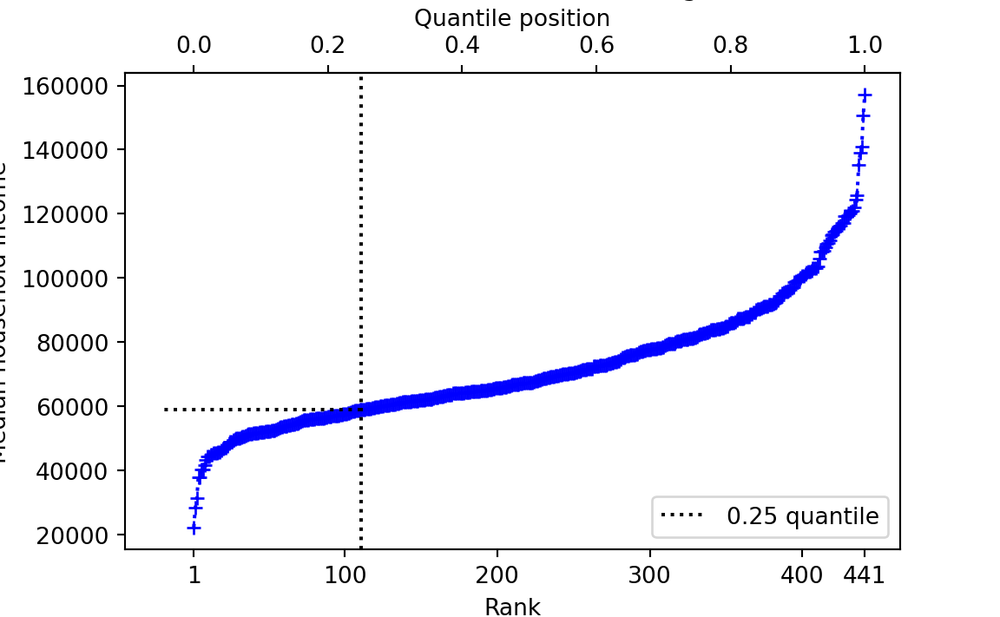
Call the 0.25 quantile value \(V\). \(V\) is the number such that 25% of the remaining values are less than \(V\), and 75% are greater.
Now let’s think about the 0.01 quantile. We don’t have an income value exactly corresponding to this QP, because there is no rank exactly corresponding to the 0.01 QP.
rank_for_qp001 <- (441 - 1) * 0.01 + 1
rank_for_qp001[1] 5.4Let’s have a look at the first 10 values for rank / QP and incomes:
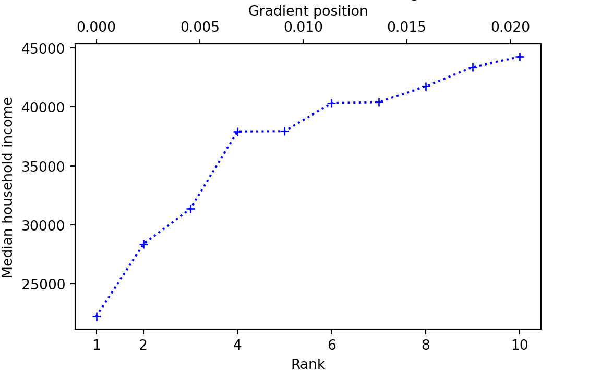
What then, is the quantile value for QP = 0.01? There are various ways to answer that question (Hyndman and Fan 1996), but one obvious way, and the default for R, is to draw a straight line up from the matching rank — or equivalently, down from the QP — then note where that line crosses the lines joining the values to the left and right of the QP on the graph above, and look across to the y-axis for the corresponding value:
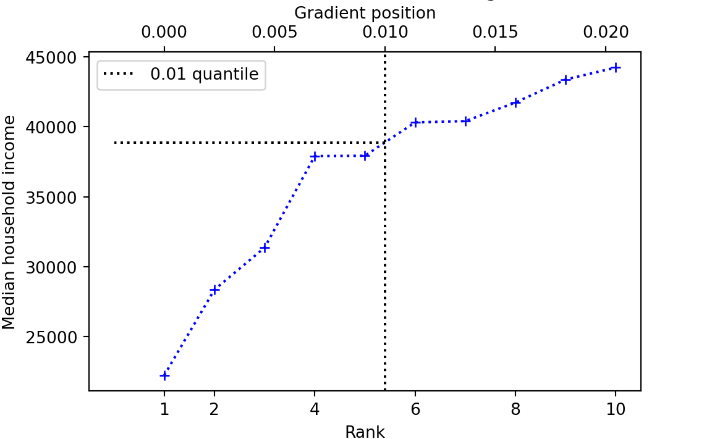
quantile(incomes, 0.01) 1%
38887 This is called the linear method — because it uses straight lines joining the points to estimate the quantile value for a QP that does not correspond to a whole-number rank.
Calculating quantiles using the linear method
We gave a graphical explanation of how to calculate the quantile for a QP that does not correspond to whole-number rank in the data. A more formal way of getting the value using the numerical equivalent of the graphical method is linear interpolation. Linear interpolation calculates the quantile value as a weighted average of the quantile values for the QPs of the whole number ranks just less than, and just greater than the QP we are interested in. For example, let us return to the QP of \(0.01\). Let us remind ourselves of the QPs, whole-number ranks and corresponding values either side of the QP \(0.01\):
| Rank | Quantile position | Quantile value |
|---|---|---|
| 5 | 0.0099 | 37933 |
| 5.4 | 0.01 | V |
| 6 | 0.0113 | 40319 |
What value should we should give \(V\) in the table? One answer is to take the average of the two values either side of the desired QP — in this case \((37933 + 40319) / 2\). We could write this same calculation as \(37933 * 0.5 + 40319 * 0.5\) — showing that we are giving equal weight (\(0.5\)) to the two values either side.
But giving both values equal weight doesn’t seem quite right, because the QP we want is closer to the QP for rank 5 (and corresponding value 37933) than it is to the QP for rank 6 (and corresponding value 40319). We should give more weight to the rank 5 value than the rank 6 value. Specifically the lower value is 0.4 rank units away from the QP rank we want, and the higher is 0.6 rank units away. So we give higher weight for shorter distance, and multiply the rank 5 value by \(1 - 0.4 = 0.6\), and the rank 6 value by \(1 - 0.6 = 0.4\). Therefore the weighted average is \(37933 * 0.6 + 40319 * 0.4 = 38887.4\). This is a mathematical way to get the value we described graphically, of tracking up from the rank of 5.4 to the line drawn between the values for rank 5 and 6, and reading off the y-value at which this track crosses that line.
16.4 Unusual values compared to the distribution
Now we return the problem of whether KMs and AOCs districts are unusual in terms of their median household incomes. From what we have so far, we might conclude that AOC’s district is fairly poor, and KM’s district is relatively wealthy. But — are either of their districts unusual in their wealth or poverty?
To answer that question, we have to think about the distribution of values. Are either AOC’s or KM’s district outside the typical spread of values for districts?
The rest of this section is an attempt to answer what we could mean by outside and typical spread.
Let us start with a histogram of the district incomes, marking the position of the KM and AOC districts.
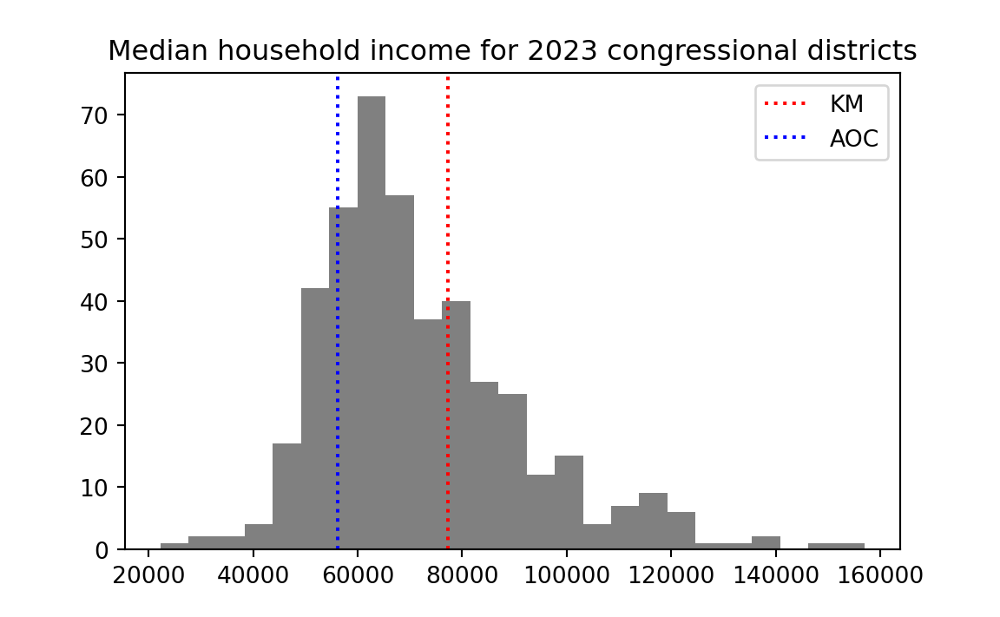
What could we mean by “outside” the “typical spread”. By outside, we mean somewhere away from the center of the distribution. Let us take the mean of the distribution to be its center, and add that to the plot.
mean_income <- mean(incomes)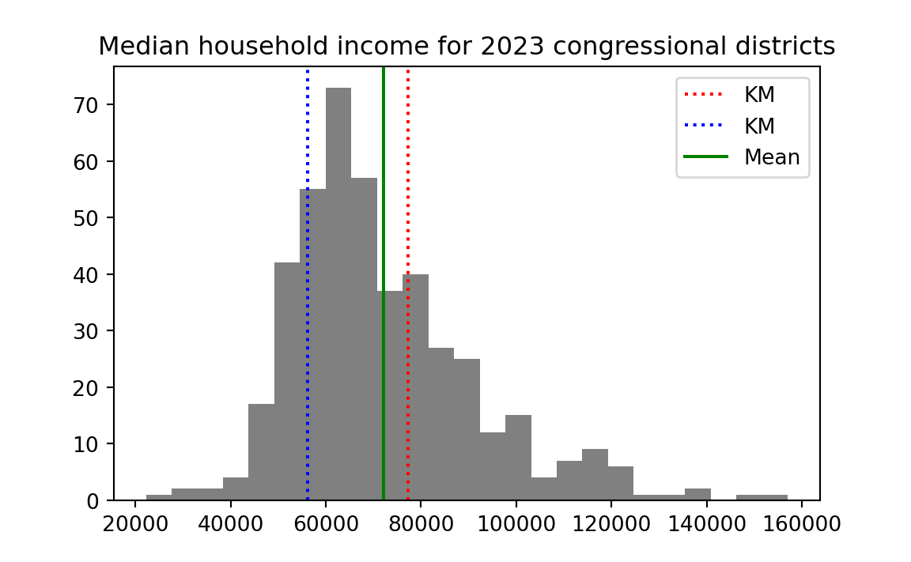
16.5 On deviations
Now let us ask what we could mean by typical spread. By spread we mean deviation either side of the center.
We can calculate how far away each income is away from the mean, by subtracting the mean from all the income values. Call the result — the deviations from the mean, or deviations for short.
deviations <- incomes - mean(incomes)The deviation values give, for each district, how far that district’s income is from the mean. Values near the mean will have small (positive or negative) values, and values further from the mean will have large (positive and negative) values. Here is a histogram of the deviation values.
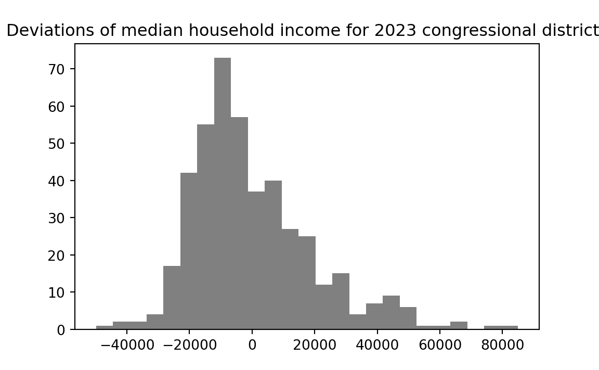
Notice that the shape of the distribution has not changed — all that changed is the position of the distribution on the x-axis. In fact, the distribution of deviations centers on zero — the deviations have a mean of (as near as the computer can accurately calculate) zero:
# Show the mean of the deviations, rounded to 8 decimal places.
round(mean(deviations), 8)[1] 016.6 The mean absolute deviation
Now let us consider the deviation value for KM and AOC:
message('Deviation for KM: ', deviations[km_index])Deviation for KM: 5098.03628117914message('Deviation for AOC: ', deviations[aoc_index])Deviation for AOC: -15977.9637188209We have the same problem as before. Yes, we see that KM has a positive deviation, and therefore, that his district is more wealthy than average across the 441 districts. Conversely AOC’s district has a negative deviation, and is poorer than average. But we still lack a standard measure of how far away from the mean each district is, in terms of the spread of values in the histogram.
To get such a standard measure, we would like idea of a typical or average deviation. Then we will compare KM’s and AOC’s deviations to the average deviation, to see if they are unusually far from the mean.
You have just seen above that we cannot use the literal average (mean) of the deviations for this purpose because the positive and negative deviations will exactly cancel out, and the mean deviation will always be as near as the computer can calculate to zero.
To stop the negatives canceling the positives, we can simply knock the minus signs off all the negative deviations.
This is the job of the R abs function — where abs is short for absolute. The abs function will knock minus signs off negative values, like this:
abs(c(-1, 0, 1, -2))[1] 1 0 1 2To get an average of the deviations, regardless of whether they are positive or negative, we can take the mean of the absolute deviations, like this:
# The Mean Absolute Deviation (MAD)
abs_deviations <- abs(deviations)
mad <- mean(abs_deviations)
# Show the result
mad[1] 15102This is the Mean Absolute Deviation (MAD). It is one measure of the typical spread. MAD is the average distance (regardless of positive or negative) of a value from the mean of the values.
We can get an idea of how typical a particular deviation is by dividing the deviation by the MAD value, like this:
message('Deviation in MAD units for KM: ', deviations[km_index] / mad)Deviation in MAD units for KM: 0.337581239498037message('Deviation in MAD units AOC: ', deviations[aoc_index] / mad)Deviation in MAD units AOC: -1.0580271499375516.7 The standard deviation
We are interested in the average deviation, but we find that a simple average of the deviations from the mean always gives 0 (perhaps with some tiny calculation error), because the positive and negative deviations cancel exactly.
The MAD calculation solves this problem by knocking the signs off the negative values before we take the mean.
16.7.1 Squares of vectors
Another very popular way of solving the same problem is to precede the calculation by squaring all the deviations. R has an operator for the operation of taking values to the power of another value: it is **. For example, to square a single number, we take the number to the power of 2, like this:
# 10 to the power of 2.
10 ** 2[1] 100You can also use the power of ** operator on a vector, and, as usual, that works elementwise. The array you get back is the result of applying the to-the-power-of operation to all elements of the vector in turn:
a_vector = c(2, 10, 12)
# All the elements in the vector, to the power of 2.
a_vector ** 2[1] 4 100 14416.7.2 Calculating the standard deviation
We can therefore square the deviations we calculated above, like this:
squared_deviations <- deviations ** 2
# Show the first five values.
squared_deviations[1:5][1] 2.49e+09 1.91e+09 1.66e+09 1.17e+09 1.17e+09
Exponential format for showing very large and very small numbers
The squared_deviation values above appear in exponential notation (E-notation). Other terms for E-notation are scientific notation, scientific form, or standard form. E-notation is a useful way to express very large (far from 0) or very small (close to 0) numbers in a more compact form.
E-notation represents a value as a floating point value \(m\) multiplied by 10 to the power of an exponent \(n\):
\[ m * 10^n \]
\(m\) is a floating point number with one digit before the decimal point — so it can be any value from 1.0 through 9.9999… \(n\) is an integer (positive or negative whole number).
For example, the median household income of KM’s district is 77205 (dollars). We can express that same number in E-notation as \(7.7205 * 10^4\) . R writes this as 7.7205e4, where the number before the e is \(m\) and the number after the e is the exponent value \(n\). E-notation is another way of writing the number, because \(7.7205 * 10^4 = 77205\).
7.7205e4 == 77205[1] TRUEIt is no great advantage to use E-notation in this case; 77205 is probably easier to read and understand than 7.7205e4. The notation comes into its own where you start to lose track of the powers of 10 when you read a number — and that does happen when the number becomes very long without E-notation. For example, \(77205^2 = 5960612025\). \(5960612025\) is long enough that you start having to count the digits to see how large it is. In E-notation, that number is 5.960612025e9. If you remember that \(10^9\) is one US billion, then the E-notation tells you at a glance that the value is about \(5.9\) billion.
R makes its own decision whether to print out numbers using E-notation. This only affects the display of the numbers; the underlying values remain the same whether R chooses to show them in E-notation or not.
The process of squaring the deviations turns all the negative values into positive values.
We can then take the average (mean) of the squared deviations to give a measure of the typical squared deviation:
mean_squared_deviation <- mean(squared_deviations)
mean_squared_deviation[1] 3.86e+08Rather confusingly, the field of statistics uses the term variance to refer to mean squared deviation value. Just to emphasize that naming, let’s do the same calculation but using “variance” as the variable name.
# Statistics calls the mean squared deviation - the "variance"
variance <- mean(squared_deviations)
variance[1] 3.86e+08The variance is the typical (in the sense of the mean) squared deviation. The units for the variance, in our case, would be squared dollars. But we are more interested in the typical deviation, in our original units – dollars rather than squared dollars.
So we take the square root of the mean squared deviation (the square root of the variance), to get the standard deviation. It is the standard deviation in the sense that it a measure of typical deviation, in the specific sense of the square root of the mean squared deviations.
# The standard deviation is the square root of the mean squared deviation.
# (and therefore, the square root of the variance).
standard_deviation <- sqrt(mean_squared_deviation)
standard_deviation[1] 19646The standard deviation (the square root of the mean squared deviation) is a popular alternative to the Mean Absolute Deviation, as a measure of typical spread.
Figure 16.1 shows another histogram of the income values, marking the mean, the mean plus or minus one standard deviation, and the mean plus or minus two standard deviations. You can see that the mean plus or minus one standard deviation includes a fairly large proportion of the data. The mean plus or minus two standard deviation includes much larger proportion.
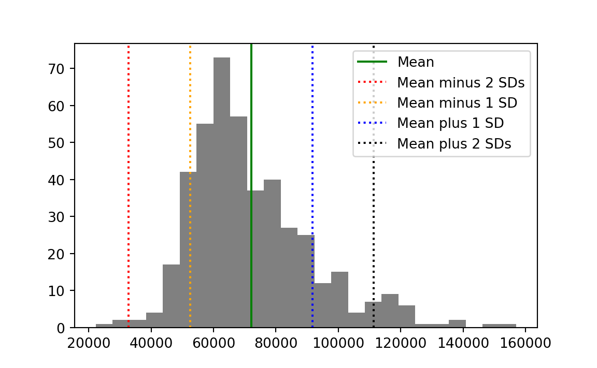
Now let us return to the question of how unusual our two congressional districts are in terms of the distribution. First we calculate the number of standard deviations of each district from the mean:
km_std_devs <- deviations[km_index] / standard_deviation
message('Deviation in standard deviation units for KM: ',
round(km_std_devs, 2))Deviation in standard deviation units for KM: 0.26aoc_std_devs <- deviations[aoc_index] / standard_deviation
message('Deviation in standard deviation units for AOC: ',
round(aoc_std_devs, 2))Deviation in standard deviation units for AOC: -0.81The values for each district are a re-expression of the income values in terms of the distribution. They give the distance from the mean (positive or negative) in units of standard deviation.
16.8 Standard scores
We will often find uses for the procedure we have just applied, where we take the original values (here, incomes) and:
- Subtract the mean to convert to deviations, then
- Divide by the standard deviation
Let’s apply that procedure to all the incomes values.
First we calculate the standard deviation:
deviations <- incomes - mean(incomes)
income_std <- sqrt(mean(deviations ** 2))Then we calculate standard scores:
deviations_in_stds <- deviations / income_std
# Show the first five values.
deviations_in_stds[1:5][1] -2.54 -2.23 -2.07 -1.74 -1.74This procedure converts the original data (here incomes) to deviations from the mean in terms of the standard deviation. The resulting values are called standard scores or z-scores. One name for this procedure is “z-scoring”.
If you plot a histogram of the standard scores, you will see they have a mean of (actually exactly) 0, and a standard deviation of (actually exactly) 1.
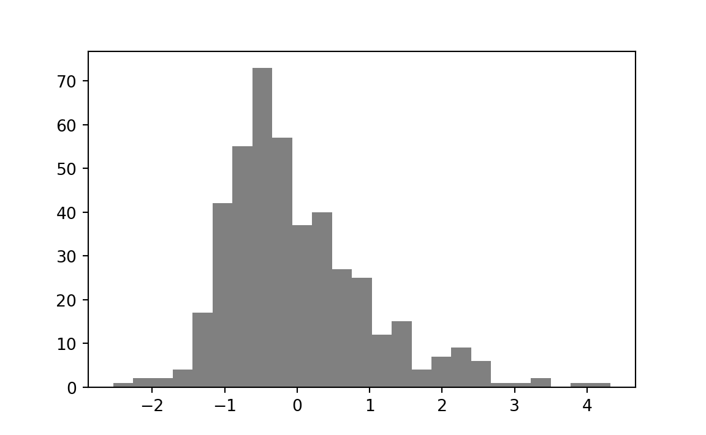
With all this information — what should we conclude about the two districts in question? KM’s district is 0.26 standard deviations above the mean, but that’s not enough to conclude that it is unusual. We see from the histogram that a large proportion of the districts are at least this distance from the mean. We can calculate that proportion directly.
# Distances (negative or positive) from the mean.
abs_std_devs <- abs(deviations_in_stds)
# Number where distance greater than KM distance.
n_gt_km <- sum(abs_std_devs > km_std_devs)
prop_gt_km <- n_gt_km / length(deviations_in_stds)
message("Proportion of districts further from mean than KM: ",
round(prop_gt_km, 2))Proportion of districts further from mean than KM: 0.82A full 82% of districts are further from the mean than is KM’s district. KM’s district is richer than average, but not unusual. The benefit of the standard deviation distance is that we can see this directly from the value, without doing the calculation of proportions, because the standard deviation is a measure of typical spread, and KM’s district is well-within this measure.
AOC’s district is -0.81 standard deviations from the mean. This is a little more unusual than KM’s score.
# Number where distance greater than AOC distance.
# Make AOC's distance positive to correspond to distance from the mean.
n_gt_aoc <- sum(abs_std_devs > abs(aoc_std_devs))
prop_gt_aoc <- n_gt_aoc / length(deviations_in_stds)
message("Proportion of districts further from mean than AOC's district: ",
round(prop_gt_aoc, 2))Proportion of districts further from mean than AOC's district: 0.35Only 35% of districts are further from the mean than AOC’s district, but this is still a reasonable proportion. We see from the standard score that AOC is within one standard deviation. AOC’s district is poorer than average, but not to a remarkable degree.
16.9 Standard scores to compare values on different scales
Why are standard scores so useful? They allow us to compare values on very different scales.
Consider the values in Table 16.4. Each row of the table corresponds to a team competing in the English Premier League (EPL) for the 2021-2022 season. For those of you with absolutely no interest in sports, the EPL is the league of the top 20 teams in English football, or soccer to our North American friends. The points column of the table gives the total number of points at the end of the 2021 season (from 38 games). The team gets 3 points for a win, and 1 point for a draw, so the maximum possible points from 38 games are \(3 * 38 = 114\). The wages column gives the estimated total wage bill in thousands of British Pounds (£1000).
| team | points | wages |
|---|---|---|
| Manchester City | 93 | 168572 |
| Liverpool | 92 | 148772 |
| Chelsea | 74 | 187340 |
| Tottenham Hotspur | 71 | 110416 |
| Arsenal | 69 | 118074 |
| Manchester United | 58 | 238780 |
| West Ham United | 56 | 77936 |
| Leicester City | 52 | 81590 |
| Brighton and Hove Albion | 51 | 49820 |
| Wolverhampton Wanderers | 51 | 62756 |
| Newcastle United | 49 | 73308 |
| Crystal Palace | 48 | 71910 |
| Brentford | 46 | 28606 |
| Aston Villa | 45 | 85330 |
| Southampton | 40 | 58657 |
| Everton | 39 | 110202 |
| Leeds United | 38 | 37354 |
| Burnley | 35 | 40830 |
| Watford | 23 | 42030 |
| Norwich City | 22 | 31750 |
Let’s say we own Crystal Palace Football Club. Crystal Palace was a bit below average in the league in terms of points. Now we are thinking about whether we should invest in higher-paid players for the coming season, to improve our points score, and therefore, league position.
One thing we might like to know is whether there is an association between the wage bill and the points scored.
To look at that, we can do a scatter plot. This is a plot with — say — wages on the x-axis, and points on the y-axis. For each team we have a pair of values — their wage bill and their points scored. For each team, we put a marker on the scatter plot at the coordinates given by the wage value (on the x-axis) and the points value (on the y-axis).
Here is that plot for our EPL data in Table 16.4, with the Crystal Palace marker picked out in red.
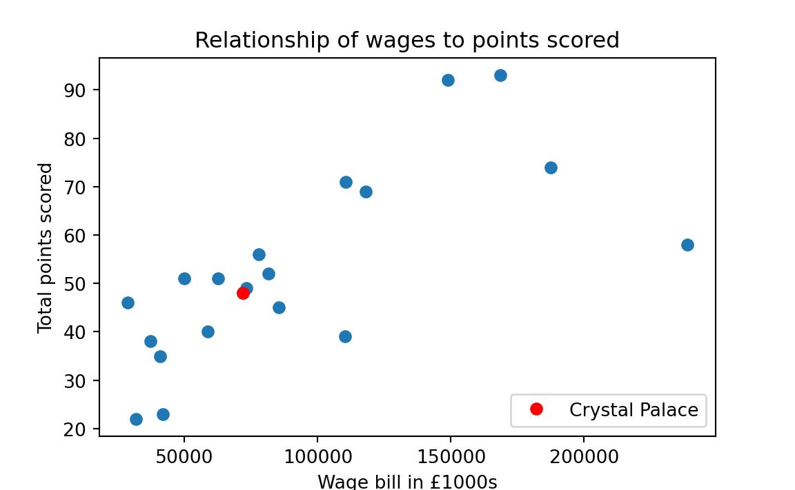
It looks like there is a rough association of wages and points; teams that spend more in wages tend to have more points.
At the moment, the points and wages are in very different units. Points are on a possible scale of 0 (lose every game) to 38 * 3 = 114 (win every game). Wages are in thousands of pounds. Maybe we are not interested in the values in these units, but in how unusual the values are, in terms of wages, and in terms of points.
This is a good application of standard scores. Standard scores convert the original values to values on a standard scale, where 0 corresponds to an average value, 1 to a value one standard deviation above the mean, and -1 to a value one standard deviation below the mean. If we follow the standard score process for both points and wages, the values will be in the same standard units.
To do this calculation, we need the values from the table. We follow the same recipe as before, in loading the data with R.
points_wages = read.csv('data/premier_league.csv')
points = points_wages$points
wages = points_wages$wagesAs you recall, the standard deviation is the square root of the mean squared deviation. In code:
# The standard deviation is the square root of the
# mean squared deviation.
wage_deviations <- wages - mean(wages)
wage_std <- sqrt(mean(wage_deviations ** 2))
wage_std[1] 55524Now we can apply the standard score procedure to wages. We divide the deviations by the standard deviation.
standard_wages <- (wages - mean(wages)) / wage_stdWe apply the same procedure to the points:
point_deviations <- points - mean(points)
point_std = sqrt(mean(point_deviations ** 2))
standard_points = point_deviations / point_stdNow, when we plot the standard score version of the points against the standard score version of the wages, we see that they are in comparable units, each with a mean of 0, and a spread (a standard deviation) of 1.
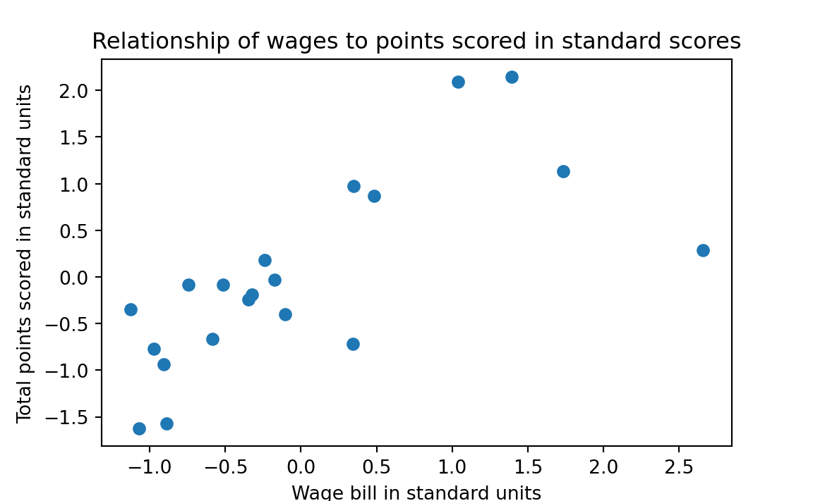
Let us go back to our concerns as the owners of Crystal Palace. Counting down from the top in the table above, we see that Crystal Palace is the 12th row. Therefore, we can get the Crystal Palace wage value with:
cp_index <- 12
cp_wages <- wages[cp_index]
cp_wages[1] 71910We can get our wage bill in standard units in the same way:
cp_standard_wages <- standard_wages[cp_index]
cp_standard_wages[1] -0.347Our wage bill is a below average, but its still within striking distance of the mean.
We know that we are comparing ourselves against the other teams, so perhaps we want to increase our wage bill by one standard deviation, to push us above the mean, and somewhat away from the center of the pack. If we add one standard deviation to our wage bill, that increases the standard score of our wages by 1.
But — if we increase our wages by one standard deviation — how much can we expect that to increase our points — in standard units.
That is question about the strength of the association between two measures — here wages and points — and we will cover that topic in much more detail in Chapter 29. But, racing ahead — here is the answer to the question we have just posed — the amount we expect to gain in points, in standard units, if we increase our wages by one standard deviation (and therefore, 1 in standard units).
For reasons we won’t justify now, we calculate the \(r\) value of association between wages and points, like this:
standards_multiplied <- standard_wages * standard_points
r = mean(standards_multiplied)
r[1] 0.708The \(r\) value is the answer to our question. For every one unit increase in standard scores in wages, we expect an increase of \(r\) (0.708) standard score units in points.
16.10 Conclusion
When we look at a set of values, we often ask questions about whether individual values are unusual or surprising. One way of doing that is to look at where the values are in the sorted order — for example, using the raw rank of values, or the proportion of values below this value — the quantiles or percentiles of a value. Another measure of interest is where a value is in comparison to the spread of all values either side of the mean. We use the term “deviations” to refer to the original values after we have subtracted the mean of the values. We can measure spread either side of the mean with metrics such as the mean of the absolute deviations (MAD) and the square root of the mean squared deviations (the standard deviation). One common use of the deviations and the standard deviation is to transform values into standard scores. These are the deviations divided by the standard deviation, and they transform values to have a standard mean (zero) and spread (standard deviation of 1). This can make it easier to compare sets of values with very different ranges and means.
To get ranks we have to be able to sort our values in some reasonable way from low to high. This usually makes sense for measured data, where the measurement gives a number in the same unit for each observation, but may not make sense for other data, such as names or labels. For example, it may or may not be meaningful to rank names alphabetically. As usual, this is a matter of judgment.↩︎
For now, let us define the median value \(M\) as the value such that (as close as possible to) half of the households in the district have a lower income than \(M\), and (as close as possible to) half have a higher income. We will give more detail on the median later in the chapter.↩︎